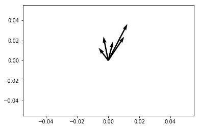

Perceptrons
1. Introduction
1.1. Goals
The goal for this file is to share the idea of a perceptron, the mathematical formula for updating one, and iniate the process of coding a simple implementation that we will adapt to the delta rule.
2. Perceptron History and Implementation
The perceptron was the invention of a psychologist, not a computer scientist. Though he obviously had a bit of the mathematician in him.
2.1. Frank Rosenblatt: Psychologist, Inventor of the Perceptron, Father of Neural Networks
Frank Rosenblatt Obituary (pdf)
Rosenblatt's Perceptron Mark I
{kind=link}
Mark 1 Perceptron (details to be found on wikipedia).
2.2. Some References
- Principles of Neurodynamics (30mb pdf).
- This is a book on Brain Theory that has several historical chapters including one on Rosenblatt.
From the preface
For this writer, the perceptron program is not primarily concerned with the invention of devices for "artificialintelligence", but rather with investigating the physical structures and neurodynamic principles which under lie "natural intelligence". A perceptron is first and fore most a brain model, not an invention for pattern recognition. As a brain model, its utility is in enabling us to determine the physical conditions for the emergence of various psychological properties.
2.3. The Perceptron Rules
- \(I = \sum_{i=1}^{n} w_i~x_i\)
- If \(I \ge T\) then \(y = +1\) else if \(I < T\) then \(y = -1\).
- if answer correct, then \(\beta = +1\), else if answer incorrect then \(\beta = -1\).
- \(\mathbf{w_{new}} = \mathbf{w_{old}} + \beta y \mathbf{x}\)
2.4. You are the Perceptron class_exercise
- Demonstrate your understanding with pencil and paper. This is often the key beginning to programming effectively. First, start with pencil and paper to make sure you understand the algorithm, and that you can effectively implement the steps in an elementary, manual fashion. Then plot the flow of of your implementation. Having done this you will find all the coding goes faster.
- Beginning with an input of \(\begin{bmatrix}0.3 \\ 0.7 \end{bmatrix}\), an initial set of weights of \(\begin{bmatrix}-0.6\\0.8\end{bmatrix}\), and a class of 1. Compute the value of the new weight vector with pen and paper.
- Do it in code. The same exact calculation. Make sure to write functions so that the step that does the calculation can be re-used with different inputs for the input, weights, and class.
What is a good data structure (class discussion)?
(defparameter my-data (list (list '( 0.3 0.7) 1.0) (list '(-0.6 0.3) -1.0) (list '( 0.7 0.3) 1.0) (list '(-0.2 -0.8) -1.0)))
import numpy as np ins = np.array([ [np.array([0.3,0.7]) , 1.0], [np.array([-0.6,0.3]) , -1.0], [np.array([0.7,0.3]) , 1.0], [np.array([-0.2,-0.8]) , -1.0]])
2.5. Coding the Perceptron
- Create a data structure for your weights and classes.
Create a function to update the weights
(defun compute-activation (current-data current-wts &key (theta 0.0)) (if ( > (apply #'+ (mapcar #'* current-data current-wts)) theta) 1.0 -1.0)) (defun compare-class (computed-class desired-class) (if (equal computed-class desired-class) 1.0 -1.0)) (defun upd-wt-perceptron (input wts &key (theta 0.0)) (let* ((in-activity (car input)) (cls (cadr input)) (y (compute-activation in-activity wts)) (beta (compare-class y cls))) (mapcar #'+ (mapcar #'(lambda (x) (* (* beta y) x)) in-activity) wts)))
Test it. Use the same one you did by hand.
(upd-wt-perceptron (elt my-data 0) (list -0.6 0.8))
-0.3 1.5 How does the network do with this original input for classifying these four cases?
(defun test-perceptron-classification (indat test-wts) (dolist (in-data-and-class indat) (format t "Right or wrong? ~a~%" (compare-class (compute-activation (car in-data-and-class) test-wts) (cadr in-data-and-class)))))
(test-perceptron-classification my-data (list -0.6 0.8))
Right or wrong? 1.0 Right or wrong? -1.0 Right or wrong? -1.0 Right or wrong? 1.0
Now train it for each of the four inputs shown above.
(defvar outwt) (defparameter starting-wts (list -0.6 0.8)) (setq outwt (let ((curr-wt starting-wts)) (dolist (ind my-data curr-wt) (setq curr-wt (upd-wt-perceptron ind curr-wt)) (format t "Current-wts are: ~a~%" curr-wt))))
Current-wts are: (-0.3 1.5) Current-wts are: (0.3 1.2) Current-wts are: (1.0 1.5) Current-wts are: (1.2 2.3)
How is our network doing now?
(test-perceptron-classification my-data outwt)
Right or wrong? 1.0 Right or wrong? 1.0 Right or wrong? 1.0 Right or wrong? 1.0
2.6. Think Geometrically

Figure 1: Geometrically, what does the weight vector mean, and what is the significane of the perpendicular to the weight vector?
2.6.1. Question for Geometrical Thinking class_discussion
- What is the relation between the inner product of two vectors and the cosine of the angle between them?
- What is the sign for the cosine of angles less than 90 degrees and those greater than 90 degrees?
- How do these facts help us to answer the question above?
- Why does this reinforce the advice to think geometrically when thinking about networks and weight vectors?
- Python Syntax Aside
The other day we saw an asterisk in python code. Here is simple demo of what it is doing. The intuition is that it is mathching up a list with the arguments of a function, e.g.:
# What is that asterisk origin doing? a = [1, 2, 3] def printInput(i1,i2,i3): print(i1) print(i2) print(i3) printInput(*a)
1 2 3
3. Rules are Made to be Broken (or at least updated): The Delta Rule
3.1. The Delta Rule
\[\Delta~w_i = x_i~\eta(desired - observed)\]
3.2. Using the Delta Rule (warm-up)
Replace the perceptron learning rule with the Delta rule and run a few rounds with your own data (can be random or hand crafted).
3.3. Thinking About the Delta Rule
- How do you know when to stop applying the delta rule?
- What happens to your weights if you don't stop?
3.4. Perceptron and Delta Rule Homework homework
Please Read Carefully You are not learning this solution. The purpose of this homework is to make sure you internalize the idea of decision planes and how multi-layer perceptrons can compute complex functions that single layer neural networks cannot. To do this you will have to solve a considerable amount of this homework on paper using your pencil or pen. And only then will you be able to write the program that implements it. You will not be implementing the delta rule here. You will be implementing your hand coded wts to create this mapping. If you want to know why this is significant see some of the background on the neural network winter, perceptrons, Marvin Minsky and linear inseparability (here is a blog that shows some of this history).
3.4.1. Perceptron (Handcoded) Solution to the XOR Problem - Steps
- Provide a table showing the XOR function (inputs and outputs)
- Show how you can compute this function using a two layer network and only (all? some?) of the Boolean functions AND, OR, NOTAND aka NAND.
- Using your understanding of how weight vectors relate to the decision plane hardcode a network in the language of your choice that will allow me to input a two valued tuple (e.g. (0,1)) and where your network will correctly compute the XOR solution and print, and where this will repeat until I chose to quit.
- Note you will need a bias. Thus your network will assume that all my end puts have a third input value that is always "1", and the weight vectors of your network have three values.
3.4.2. Delta Rule Assignment
- Create two classes of random data
- Draw an x-y plane.
- Draw a line on that plane.
- Put ten points on one-side of the line and ten points on the other.
- Mark one set of points as the +1s and the other as the -1s
- Record the x-y coordinates of each point and their class into your data structure. 1
- Generate a random set of starting weights with a bias.
- Train a simple one-unit delta rule network to correctly classify all the twenty examples in your data set.
Footnotes:
If you are feeling comfortable with your coding figure out a way to automate the prior steps to create new data sets programmatically.